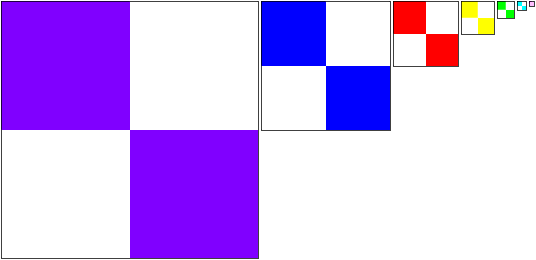

WebGL 3D - Текстуры
Эта статья продолжает серию статей о WebGL. В первой из них мы начали с основ WebGL, а в предыдущей рассмотрели анимацию.
Как применить текстуру в WebGL? Возможно, вы сможете разобраться из статьи об обработке изображений, но будет проще, если мы разберём всё сначала более подробно.
Первое, что нам нужно сделать - приспособить шейдер к использованию текстур. Далее идут изменения в вершинном шейдере. Нам нужно передать в него текстурные координаты. В данном случае мы передаём их без изменений сразу во фрагментный шейдер.
attribute vec4 a_position;
*attribute vec2 a_texcoord;
uniform mat4 u_matrix;
*varying vec2 v_texcoord;
void main() {
// умножаем координаты на матрицу
gl_Position = u_matrix * a_position;
* // передаём текстурные координаты во фрагментный шейдер
* v_texcoord = a_texcoord;
}
Во фрагментном шейдере мы объявляем uniform-переменную sampler2D, через
которую будем обращаться к текстуре. Мы используем текстурные координаты,
переданные из вершинного шейдера и вызваем функцию texture2D для
получения цвета из этой текстуры.
precision mediump float;
// приходит из вершинного шейдера
*varying vec2 v_texcoord;
*// текстура
*uniform sampler2D u_texture;
void main() {
* gl_FragColor = texture2D(u_texture, v_texcoord);
}
Нам необходимо настроить текстурные координаты.
// получаем ссылку на данные вершины
var positionLocation = gl.getAttribLocation(program, "a_position");
*var texcoordLocation = gl.getAttribLocation(program, "a_texcoords");
...
*// создаём буфер для текстурных координат
var buffer = gl.createBuffer();
gl.bindBuffer(gl.ARRAY_BUFFER, buffer);
*gl.enableVertexAttribArray(texcoordLocation);
*
*// текстурные координаты - числа с плавающей точкой
*gl.vertexAttribPointer(texcoordLocation, 2, gl.FLOAT, false, 0, 0);
*
*// задаём текстурные координаты
*setTexcoords(gl);
Текстурные координаты сопоставляют целую текстуру с каждой гранью нашей буквы 'F'.
*// заполняем буфер текстурными координатами для F
*function setTexcoords(gl) {
* gl.bufferData(
* gl.ARRAY_BUFFER,
* new Float32Array([
* // лицевая часть столба слева
* 0, 0,
* 0, 1,
* 1, 0,
* 0, 1,
* 1, 1,
* 1, 0,
*
* // лицевая часть верхней перекладины
* 0, 0,
* 0, 1,
* 1, 0,
* 0, 1,
* 1, 1,
* 1, 0,
* ...
* ]),
* gl.STATIC_DRAW);
Также нам понадобится текстура. Мы бы могли создать её сами, но в данном случае просто загрузим изображение, так как это наиболее распространённый способ.
Вот такое изображение мы будем использовать:

Изображение отлично нам подходит! По изображению буквы 'F' легко понять, в какую сторону повёрнуто изображение при использовании текстуры.
Необходимо помнить, что изображение загружается асинхронно. Мы посылаем запрос на загрузку изображения, а через некоторое время браузер скачивает его. Есть 2 распространённых подхода для обхода этой ситуации. Мы могли бы дожидаться, когда текстура загрузится, и лишь затем начинать отрисовку. А можно использовать другую текстуру на время загрузки изображения. В последнем случае мы могли бы начать отрисовку немедленно. А затем, когда изображение загрузится, мы перенесли бы его в текстуру. Именно такой подход мы и будем использовать далее.
*// создаём текстуру
*var texture = gl.createTexture();
*gl.bindTexture(gl.TEXTURE_2D, texture);
*
*// заполняем текстуру голубым пикселем 1x1
*gl.texImage2D(gl.TEXTURE_2D, 0, gl.RGBA, 1, 1, 0, gl.RGBA, gl.UNSIGNED_BYTE,
* new Uint8Array([0, 0, 255, 255]));
*
*// асинхронная загрузка изображения
*var image = new Image();
*image.src = "resources/f-texture.png";
*image.addEventListener('load', function() {
* // теперь, когда изображение загрузилось, копируем его в текстуру
* gl.bindTexture(gl.TEXTURE_2D, texture);
* gl.texImage2D(gl.TEXTURE_2D, 0, gl.RGBA, gl.RGBA,gl.UNSIGNED_BYTE, image);
* gl.generateMipmap(gl.TEXTURE_2D);
*});
И вот результат:
А что, если нам понадобится использовать только часть текстуру для фронтальной части 'F'? К текстурам идёт обращение через "текстурные координаты", которые идут в диапазоне от 0.0 до 1.0 слева направо по текстуре и от 0.0 до 1.0 от первого пикселя первой строки до последнего пикселя последней строки. Заметьте, что я не сказал "верх" или "низ". Верх и низ не имеют смысла в пространстве текстуры, потому что до тех пор, пока вы не отрисуете что-то и не зададите направления, не будет верха или низа. Важно лишь, что вы передаёте текстурные данные в WebGL. Начало данных начинается в текстурных координатах 0,0, а заканчиваются в 1,1.

Я загрузил текстуру в фотошоп и отметил необходимые координаты в пикселях.

Для конвертации из пиксельных координат в текстурные мы можем использовать формулу.
texcoordX = pixelCoordX / (width - 1)
texcoordY = pixelCoordY / (height - 1)
Вот текстурные координаты для фронтальной части.
// лицевая часть левого столба
38 / 255, 44 / 255,
38 / 255, 223 / 255,
113 / 255, 44 / 255,
38 / 255, 223 / 255,
113 / 255, 223 / 255,
113 / 255, 44 / 255,
// лицевая часть верхней перекладины
113 / 255, 44 / 255,
113 / 255, 85 / 255,
218 / 255, 44 / 255,
113 / 255, 85 / 255,
218 / 255, 85 / 255,
218 / 255, 44 / 255,
// лицевая часть средней перекладины
113 / 255, 112 / 255,
113 / 255, 151 / 255,
203 / 255, 112 / 255,
113 / 255, 151 / 255,
203 / 255, 151 / 255,
203 / 255, 112 / 255,
Я использовал такие же текстурные координаты для задней стороны. И вот результат.
Пример нельзя назвать потрясающим, но надеюсь, что он наглядно демонстрирует использование текстурных координат. Если вы создаёте геометрию в коде (куб, сферу и прочее), вычислять текстурные координаты довольно легко. С другой стороны, при использовании 3D-моделей редакторов 3D вроде Blender, Maya, 3D Studio Max, создатель модели сам задаст текстурные координаты в этих редакторах.
А что же случится при использовании текстурных координат за пределами диапазона от 0.0 до 1.0? По умолчанию WebGL повторит текстуру. От 0.0 до 1.0 находится одна копия текстуры. От 1.0 до 2.0 - вторая. И даже от -4.0 до -3.0 находится копия. Отобразим поверхность, используя следующие текстурные координаты.
-3, -1,
2, -1,
-3, 4,
-3, 4,
2, -1,
2, 4,
Получится следующее:
Вы можете повторять текстуру в определённых направлениях через CLAMP_TO_EDGE. Например,
gl.texParameteri(gl.TEXTURE_2D, gl.TEXTURE_WRAP_S, gl.CLAMP_TO_EDGE);
gl.texParameteri(gl.TEXTURE_2D, gl.TEXTURE_WRAP_T, gl.CLAMP_TO_EDGE);
Попробуйте разные переключатели в примере выше, чтобы понять разницу.
Вы могли заметить вызов функции gl.generateMipmap при загрузке текстуры.
Для чего она нужна?
Представьте, что у нас есть текстура 16x16 пикселей.

Теперь представьте, что мы пытаемся отрисовать эту текстуру на полигоне размером 2x2 пикселей на экране. Какой цвет будет у этих 4 пикселей? Нужно выбрать из 256 пикселей. В фотошопе при масштабировании изображения 16x16 пикселей до изображения размером 2x2 в каждом углу уместится квадрат 8x8 пикселей, чтобы получить эти 4 пикселя в изображении 2x2. К сожалению, чтение 64 пикселей и их усреднение даётся видеокарте не так легко. А теперь представьте, что у вас текстура размером 2048x2084 пикселей и вы пытаетесь уместить её в изображение размером 2x2. Для этого фотошоп для каждого из 4 пикселей в этом изображении 2x2 усреднит 1024x1024 пикселей (или миллион пикселей) четыре раза. Довольно сложно это сделать, особенно учитывая, что это нужно сделать быстро.
В этом случае видеокарта использует мипмапы. Мипмап - это набор уменьшающихся изображений, каждое из которых в 4 раза меньше предыдущего. Мипмап для уже знакомой нам текстуры 16x16 может выглядеть следующим образом:

Обычно каждое уменьшенное изображение - это просто билинейная интерполяция
предыдущего, и именно их создаёт функция gl.generateMipmap. Она берёт
самое большое изображение и создаёт все уменьшенные копии. Конечно же, вы
можете сделать уменьшенные изображения и сами.
Теперь, если вы попытаетесь отрисовать текстуру 16x16 пикселей на полигоне 2x2 пикселей, WebGL выберет уже готовое уменьшенное изображение размером 2x2 из мипмапа.
Вы можете выбрать одну из 6 моделей фильтра текстуры.
NEAREST= выбрать 1 пиксель из большего изображенияLINEAR= выбрать 4 пикселя из большего изображения и смешать ихNEAREST_MIPMAP_NEAREST= выбрать лучшее изображение (меньшее или большее) и выбрать 1 пиксель из негоLINEAR_MIPMAP_NEAREST= выбрать лучшее изображение и смешать 4 пикселя из негоNEAREST_MIPMAP_LINEAR= выбрать 2 лучших изображения, взять по 1 пикселю из каждого и смешать ихLINEAR_MIPMAP_LINEAR= выбрать 2 лучших изображения, взять по 4 пикселя из каждого и смешать их
На следующих 2 примерах можно увидеть разницу в этих моделях. Первый пример
демонстрирует использование NEAREST или LINEAR, где всегда берётся пиксель
из большего изображения, и поэтому изображение начинает мигать при движении
объекта. При такое модели необходимо всегда выбрать единственный пиксель из
большего изображение, а в зависимости от размера и положения изображения иногда
берётся один пиксель, а иногда - другой, поэтому мы получаем мерцание.
Обратите внимание, как сильно мерцают левые и средние изображения, в то время как правые мерцает
значительно меньше. Правые изображения тоже имеют смешанные цвета, так как они используют мипмапы.
Чем меньше текстура, тем дальше друг от друга WebGL берёт пиксели. Именно поэтому нижнее изображение
посередине, мерцает, даже не смотря на использование LINEAR и смешивание 4 пикселей - это происходит
из-за того, что эти 4 пикселя из разных углов изображения 16x16, и в зависимости от того, какие 4
пикселя выберутся, будут получены разные цвета. А изображение справа внизу остаётся постоянного цвета,
так как использует предпоследнее (почти самое маленькое) изображение из мипмапа.
Второй пример показывает полигоны, уходящие далеко вглубь экрана.
6 лент, идущих вглубь экрана, используют 6 различных моделей фильтрации,
рассмотренных выше. Верхняя левая лента использует NEAREST и выглядит
очень угловатой. Верхняя средняя использует LINEAR, и она ненамного лучше.
Правая верхняя использует NEAREST_MIPMAP_NEAREST. Кликните на изображении
для переключения на текстуру, где каждое изображение из мипмапа отличается
по цвету, и вам будет легко определить, какое именно изображение используется.
Нижняя левая лента использует LINEAR_MIPMAP_NEAREST, при котором выбирается
лучшее изображение мипмапа, а затем смешивается 4 пикселя из этого изображения.
Хороши видны переходы от одного изображения мипмапа к другому. Нижнее
изображение посередине использует NEAREST_MIPMAP_LINEAR, где подбираются 2
наиболее подходящих изображения из мипмапа, из каждого берётся по пикселю и
смешивается. В нём можно по-прежнему разглядеть угловатость, особенно в
горизонтальном направлении. Ну и нижнее правое изображение использует
LINEAR_MIPMAP_LINEAR, где подбираются 2 наиболее подходящих изображения из
мипмапа, из каждого выбирается по 4 пикселя, и эти 8 пикселей смешиваются.

Возможно, вы сейчас думаете, зачем вообще использовать что-то отличное от
LINEAR_MIPMAP_LINEAR, которое, вероятно, лучше всех. Причин множество.
Во-первых, LINEAR_MIPMAP_LINEAR - самая медленная. Чтение 8 пикселей
происходит медленнее, чем чтение одного. На современных видеокартах скорей
всего это не будет проблемой, если вы используете одновременно одну текстуру,
но современные игры могут использовать от 2 до 4 текстур сразу. 4 текстуры
* 8 пикселей на текстуру = чтение 32 пикселей для каждой отрисовки. Это
будет медленным. Во-вторых, вам могут понадобиться определённые эффекты.
Например, если вам нужно получить пикселизованный ретро вид, возможно,
вы захотите использовать NEAREST. Кроме того, для мипмапов нужна память.
По сути, они используют на 33% больше памяти. Это может быть большим объёмом
памяти, особенно для очень больших текстур вроде приветственного экрана игры.
Если вы не планируете отрисовывать объект меньше, чем самый большой размер
изображения, зачем создавать уменьшенные копии и тратить на них память?
Вместо этого просто используйте NEAREST или LINEAR, так как они всегда
используют первое изображение.
Для задания фильтры вызовите gl.texParameter следующим образом:
gl.texParameteri(gl.TEXTURE_2D, gl.TEXTURE_MIN_FILTER, gl.LINEAR_MIPMAP_LINEAR);
gl.texParameteri(gl.TEXTURE_2D, gl.TEXTURE_MAG_FILTER, gl.LINEAR);
Настройка TEXTURE_MIN_FILTER задаёт поведение фильтра, когда отрисовываемый
объект меньше самого большого изображения мипмапа. Настройка TEXTURE_MAG_FILTER
задаёт поведение фильтра, когда отрисовываемый объект больше самого большого
изображения мипмапа. Для TEXTURE_MAG_FILTER допустимыми значениями являются
только NEAREST и LINEAR.
Скажем, мы хотим использовать следующую текстуру.

Вот, что из этого выйдет:
Почему не видно текстуру клавиатуры? Потому что у WebGL есть строгое ограничение - размер текстуры должен быть
степенью двойки в обоих измерениях. Степени двойки - 1, 2, 4, 8, 16, 32, 64, 128, 256, 512, 1024, 2048 и т.д.
Текстура с буквой 'F' имеет размер 256x256. 256 - степень двойки. А размер текстуры клавиатуры - 320x240. Ни
один из этих размеров не является степенью двойки, поэтому текстура не отображается. В шейдере, в котором
вызывается texture2D, при некорректно настроенной текстуре используется цвет (0, 0, 0, 1) - чёрный. Если вы
откроете консоль JavaScript (консоль браузера), вы сможете увидеть ошибки касательно проблемы с текстурой.
WebGL: INVALID_OPERATION: generateMipmap: level 0 not power of 2
or not all the same size
WebGL: drawArrays: texture bound to texture unit 0 is not renderable.
It maybe non-power-of-2 and have incompatible texture filtering or
is not 'texture complete'.
Для устранения этой ошибки нам нужно задать режим оборачивания CLAMP_TO_EDGE
и отключить мипмапы, используя фильтрLINEAR или NEAREST.
Изменим код загрузки изображения соответствующим образом. Для начала нам понадобится функция, которая скажет, является ли значение степенью двойки.
function isPowerOf2(value) {
return (value & (value - 1)) == 0;
}
Я не буду вдаваться в двоичную арифметику, чтобы объяснить, как это работает. Это просто работает, мы же можем использовать функцию следующим образом:
// асинхронная загрузка изображения
var image = new Image();
image.src = "resources/keyboard.jpg";
image.addEventListener('load', function() {
// теперь, когда изображение загрузилось, копируем его в текстуру
gl.bindTexture(gl.TEXTURE_2D, texture);
gl.texImage2D(gl.TEXTURE_2D, 0, gl.RGBA, gl.RGBA,gl.UNSIGNED_BYTE, image);
* // проверяем, что размер изображения равен степени двойки в обоих измерениях
* if (isPowerOf2(image.width) && isPowerOf2(image.height)) {
* // Да, степень двойки. Генерируем мипмап.
gl.generateMipmap(gl.TEXTURE_2D);
* } else {
* // Нет, это не степень двойки. Отключаем мипмапы и устанавливаем режим CLAMP_TO_EDGE
* gl.texParameteri(gl.TEXTURE_2D, gl.TEXTURE_WRAP_S, gl.CLAMP_TO_EDGE);
* gl.texParameteri(gl.TEXTURE_2D, gl.TEXTURE_WRAP_T, gl.CLAMP_TO_EDGE);
* gl.texParameteri(gl.TEXTURE_2D, gl.TEXTURE_MIN_FILTER, gl.LINEAR);
* }
}
И вот результат.
Распространённый вопрос - "Как мне применить разные изображения к каждой грани куба?". Скажем, что у нас есть 6 изображений.
 |  |  |
 |  |
На ум приходят 3 варианта.
1) Сделать сложный шейдер, который содержит ссылки на 6 текстур и по переданной в вершину информации шейдер понимает, какую текстуру использовать. НЕ ДЕЛАЙТЕ ТАК! Немного подумав, становится понятно, что в итоге вами придётся написать кучу различных шейдеров, чтобы сделать то же самое для других объектов с большим количеством граней.
2) Использовать 6 отдельных плоскостей вместо куба. Довольно распространённое решение. Оно не так плохо, но работает только с достаточно простыми объектами вроде куба. Если у вас есть сфера с 1000 квадрантами и вы захотите задать для каждого квадранта отдельную текстуру, вам придётся отрисовывать 1000 плоскостей, что будет достаточно медленно.
3) И, пожалуй, лучшим решением будет объединение всех изображений в одну текстуру и использование текстурных координат для сопоставления различных частей текстуры отдельным граням куба. Эта техника используется большинством высокопроизводительных приложений (читай играми). Поэтому мы помещаем все изображения в одну текстуру следующим образом:

и затем используем другой набор текстурных координат для каждой грани куба.
// выбираем нижнее левое изображение
0 , 0 ,
0 , 0.5,
0.25, 0 ,
0 , 0.5,
0.25, 0.5,
0.25, 0 ,
// выбираем нижнее среднее изображение
0.25, 0 ,
0.5 , 0 ,
0.25, 0.5,
0.25, 0.5,
0.5 , 0 ,
0.5 , 0.5,
// выбираем нижнее правое изображение
0.5 , 0 ,
0.5 , 0.5,
0.75, 0 ,
0.5 , 0.5,
0.75, 0.5,
0.75, 0 ,
// выбираем верхнее левое изображение
0 , 0.5,
0.25, 0.5,
0 , 1 ,
0 , 1 ,
0.25, 0.5,
0.25, 1 ,
// выбираем верхнее среднее изображение
0.25, 0.5,
0.25, 1 ,
0.5 , 0.5,
0.25, 1 ,
0.5 , 1 ,
0.5 , 0.5,
// выбираем верхнее правое изображение
0.5 , 0.5,
0.75, 0.5,
0.5 , 1 ,
0.5 , 1 ,
0.75, 0.5,
0.75, 1 ,
И мы получим:
Объединение нескольких изображений в одной текстуре часто называют текстурным атласом. Его использование является предпочтительным, так как грузится всего 1 текстура, и шейдер остаётся простым, так как он содержит всего одну ссылку на текстуру и требует одного вызова для отрисовки объекта, в то время как разбитый на плоскости объект требует одного вызова отрисовки на каждую из текстур.
Есть ещё несколько вещей, которые, возможно, вы бы хотели знать о текстурах. Одна из них - использование 2 и более текстур одновременно. Вторая - загрузка изображений с других доменов. И ещё одна - коррекция перспективы текстуры, которая хотя и тривиальная в некотором роде, но всё же о ней полезно знать.
Далее разберём, как передать данные в текстуру из JavaScript. Или попробуем упростить код за счёт функций-помощников.